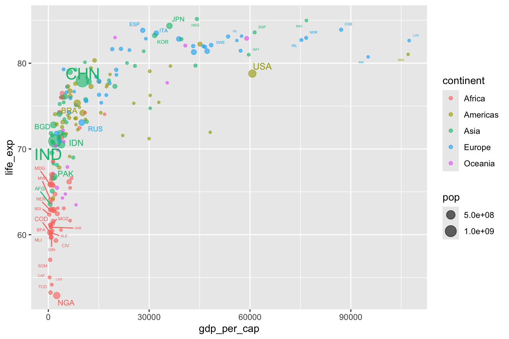
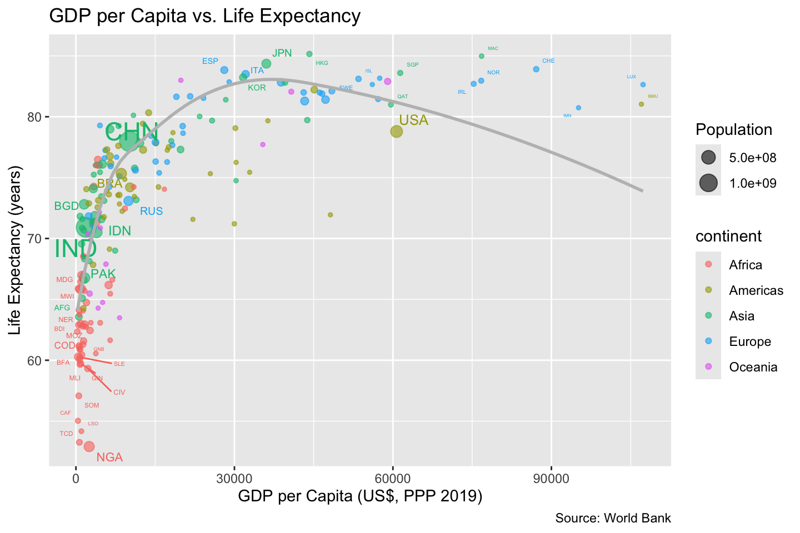
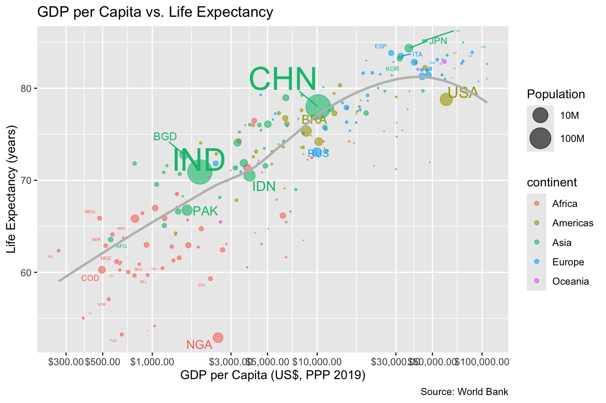
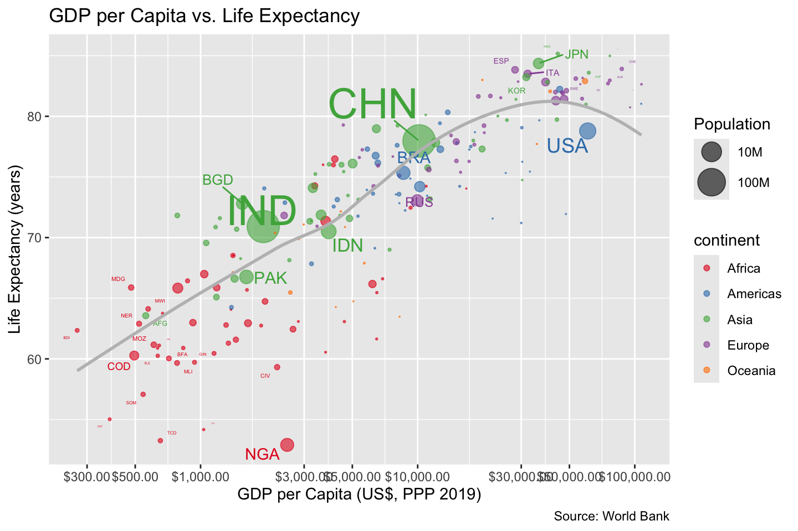
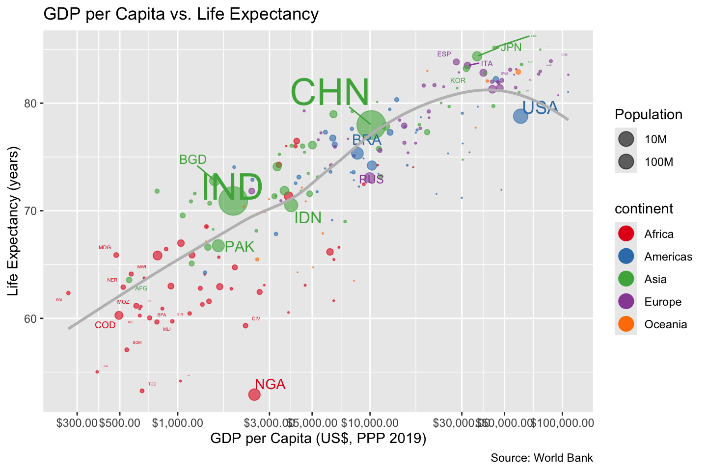

library(tidyverse)
library(countrycode)
library(ggrepel)
library(scales)Lab05
Setup
Load the necessary libraries
2 Preparing the Data
2.1 Data Import
gdp_data <- read_csv("data/API_NY.GDP.PCAP.KD_DS2_en_csv_v2_144436/API_NY.GDP.PCAP.KD_DS2_en_csv_v2_144436.csv", skip=3)
life_exp_data <- read_csv("data/API_SP.DYN.LE00.IN_DS2_en_csv_v2_144366/API_SP.DYN.LE00.IN_DS2_en_csv_v2_144366.csv", skip=3)
pop_data <- read_csv("data/API_SP.POP.TOTL_DS2_en_csv_v2_144171/API_SP.POP.TOTL_DS2_en_csv_v2_144171.csv", skip=3)2.2 Column Selection
gdp_data <- gdp_data |>
select("Country Name", "Country Code", "2019") |>
rename(country = "Country Name", code = "Country Code", gdp_per_cap = "2019")
life_exp_data <- life_exp_data |>
select("Country Name", "Country Code", "2019") |>
rename(country = "Country Name", code = "Country Code", life_exp = "2019")
pop_data <- pop_data |>
select("Country Name", "Country Code", "2019") |>
rename(country = "Country Name", code = "Country Code", pop = "2019")2.3 Merge Data
countries <- gdp_data |>
left_join(life_exp_data, by=c('country', 'code')) |>
left_join(pop_data, by=c('country', 'code')) |>
select('country', 'code', 'gdp_per_cap', 'life_exp', 'pop')2.4 Identify Non-Country Rows
countries_filtered <- countries |>
mutate(code_2 = countrycode(code, origin="wb", destination="wb", warn=FALSE)) |>
filter(!is.na(code_2))
difference <- paste0("The number of non-country rows: ", count(countries) - count(countries_filtered))
# Print the message
print(difference)[1] "The number of non-country rows: 49"2.5 Append Continent Column
countries_filtered <- countries_filtered |>
mutate(continent = countrycode(code, origin="wb", destination="continent", warn=FALSE))
head(countries_filtered)# A tibble: 6 × 7
country code gdp_per_cap life_exp pop code_2 continent
<chr> <chr> <dbl> <dbl> <dbl> <chr> <chr>
1 Aruba ABW 30318. 76.2 106442 ABW Americas
2 Afghanistan AFG 559. 63.6 37769499 AFG Asia
3 Angola AGO 2666. 62.4 32353588 AGO Africa
4 Albania ALB 4543. 79.3 2854191 ALB Europe
5 Andorra AND 39414. NA 76343 AND Europe
6 United Arab Emirates ARE 43785. 79.7 9211657 ARE Asia 2.6 Remove Missing Data
countries_filtered <- countries_filtered |>
drop_na()
any(is.na(countries_filtered))[1] FALSE2.7 Count Countries
num_countries <-
distinct(countries_filtered, country) |>
count()
num_countries# A tibble: 1 × 1
n
<int>
1 1982.8 Prepare Country Labels
countries_filtered <- countries_filtered |>
mutate(label = case_when(
rank(desc(gdp_per_cap)) <= 10 ~ code,
rank(gdp_per_cap) <= 10 ~ code,
rank(desc(life_exp)) <= 10 ~ code,
rank(life_exp) <= 10 ~ code,
rank(pop) <= 10 ~ code,
TRUE ~ ""
))
countries_filtered# A tibble: 198 × 8
country code gdp_per_cap life_exp pop code_2 continent label
<chr> <chr> <dbl> <dbl> <dbl> <chr> <chr> <chr>
1 Aruba ABW 30318. 76.2 1.06e5 ABW Americas ""
2 Afghanistan AFG 559. 63.6 3.78e7 AFG Asia "AFG"
3 Angola AGO 2666. 62.4 3.24e7 AGO Africa ""
4 Albania ALB 4543. 79.3 2.85e6 ALB Europe ""
5 United Arab Emirates ARE 43785. 79.7 9.21e6 ARE Asia ""
6 Argentina ARG 12716. 77.3 4.49e7 ARG Americas ""
7 Armenia ARM 4562. 75.4 2.82e6 ARM Asia ""
8 Antigua and Barbuda ATG 18358. 78.7 9.21e4 ATG Americas ""
9 Australia AUS 59001. 82.9 2.53e7 AUS Oceania ""
10 Austria AUT 46616. 81.9 8.88e6 AUT Europe ""
# ℹ 188 more rows3 Visualizing the Data
3.1 Set Up Basic Plot
basic_plot <- ggplot(countries_filtered, aes(x = gdp_per_cap, y = life_exp, size = pop, color = continent)) +
geom_point(alpha = 0.6)
basic_plot3.2 Add Labels
basic_plot <- basic_plot +
geom_text_repel(aes(label = label), show.legend = FALSE, max.overlaps = Inf)
basic_plot
3.3 Add Trend Curve
basic_plot <- basic_plot +
geom_smooth(method = "loess", se = FALSE, color="gray", size=1, aes(weight=pop))Warning: Using `size` aesthetic for lines was deprecated in ggplot2 3.4.0.
ℹ Please use `linewidth` instead.basic_plot3.4 Add Annotations
basic_plot <- basic_plot +
labs(
title = "GDP per Capita vs. Life Expectancy",
x = "GDP per Capita (US$, PPP 2019)",
y = "Life Expectancy (years)",
legend = "Continent",
size = "Population",
caption = "Source: World Bank"
)
basic_plot
3.5 Change x-Axis Scale
basic_plot <- basic_plot +
scale_x_log10(
breaks = breaks_log(n = 10),
labels = dollar_format(scale = 1)
)
basic_plot3.6 Change Size Scale
basic_plot <- basic_plot +
scale_size_area(
labels = c("1M", "10M", "100M", "1B"),
max_size = 20
)
basic_plot
3.7 Change Color Scale
basic_plot <- basic_plot +
scale_color_brewer(palette = "Set1")
basic_plot
3.8 Override Transparency in Legend
basic_plot <- basic_plot +
guides(
color = guide_legend(override.aes = list(alpha = 1, size = 5)),
size = guide_legend(override.aes = list(size = 5))
)
basic_plot
3.9 Choose a ggplot2 Theme
basic_plot <- basic_plot + theme_classic()
basic_plotTried various theme such as theme_minimal(), theme_light(), i feel that theme_classic() is the best for this plot because the theme removed the coordinates system, which is not necessary for this plot. At the same time, it bolded the axis lines which makes the plot more outstanding. Overall, the looks and feels of the plot is more professional and clean.
3.10 Reason About the Data
- The plot shows a positive correlation between GDP per Capita and Life Expectancy. The trend curve is increasing, which means that countries with higher GDP per Capita tend to have higher life expectancy.
- The size of the bubble represents the population of the country. The larger the bubble, the larger the population. This visualisation provide a clear understanding of how the bubble are portrayed in the plot.
- The color of the bubble represents the continent of the country. The legend on the right shows the color mapping for each continent.
- The plot is based on the data from 2019. The data is sourced from the World Bank.